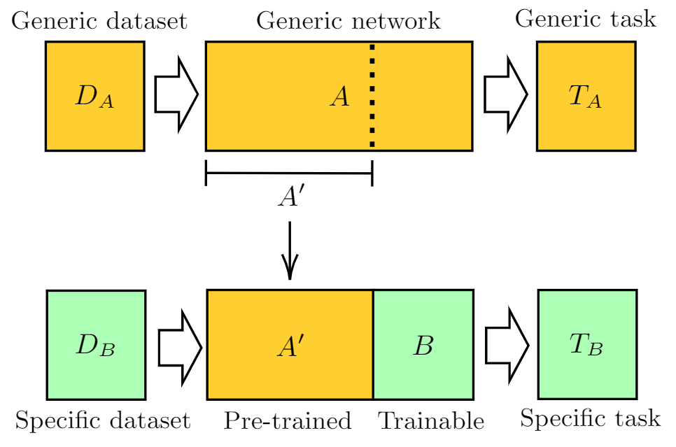

Pre-trained Networks
Apply transfer learning with pre-trained networks whenever feasible
Context: Training the deep learning models typically requires labelled data points. At times, the training data can be huge and networks with large number of parameters may be required to achieve the desired performance.
Problem: The training process typically involves multiple rounds of training by trying out different permutations of hyperparameters to arrive at the best model. In the case of large networks with huge amount of training data, the process can take a very long time due to the number of computations involved. This can make the training process expensive in terms of energy consumed.
Solution: The energy requirements of training the network could be cut down using transfer learning if pre-trained models exist for the given task. Transfer learning is the approach where a machine learning model trained on one task is reused on a different task. Transfer learning can be used when the data available for training is limited or collecting them is too expensive. Sometimes, transfer learning may involve fine tuning the pre-trained model with a smaller dataset. Due to the absence of or reduction in the training involved, the corresponding computational energy spent on the process can be saved.
Example: Consider a scenario where the user is required to build a model that gives a vector representation of words from a natural language text. It would require training the neural network using the data from a large corpus of text over several iterations to arrive at an adequate vector representation. Instead, the user can use a pre-trained model like Sentence-BERT and save the energy required to train a model from scratch.
- https://stackoverflow.com/questions/53923344/
- https://stackoverflow.com/questions/45279799/
- https://stackoverflow.com/questions/55944771/
- https://stackoverflow.com/questions/57531365/
- https://stackoverflow.com/questions/66729085/
- https://stackoverflow.com/questions/50806953/
- https://stackoverflow.com/questions/43106136/
- https://stackoverflow.com/questions/50215301/
- https://stackoverflow.com/questions/60930766/
- https://stackoverflow.com/questions/63744053/
- https://stackoverflow.com/questions/52224555/
- https://stackoverflow.com/questions/62143332/
- https://stackoverflow.com/questions/67821830/
- https://stackoverflow.com/questions/67572091/
- https://stackoverflow.com/questions/55944771/
- https://stackoverflow.com/questions/57531365/
- https://stackoverflow.com/questions/66729085/
- https://stackoverflow.com/questions/50806953/
- https://stackoverflow.com/questions/54476745/
- https://stackoverflow.com/questions/60166831/
- https://stackoverflow.com/questions/44338564/
- https://stackoverflow.com/questions/63744053/
- https://stackoverflow.com/questions/58200403/
- https://stackoverflow.com/questions/47414900/
- https://stackoverflow.com/questions/60817825/
- https://stackoverflow.com/questions/37427786/
- https://stackoverflow.com/questions/61550788/
- https://stackoverflow.com/questions/63302446/
- https://stackoverflow.com/questions/65516526/
- https://stackoverflow.com/questions/46309753/
- https://stackoverflow.com/questions/42650003/
- https://stackoverflow.com/questions/42788342/
- https://stackoverflow.com/questions/48677128/
- https://stackoverflow.com/questions/58898253/
- https://stackoverflow.com/questions/67260853/
- https://stackoverflow.com/questions/67703023/